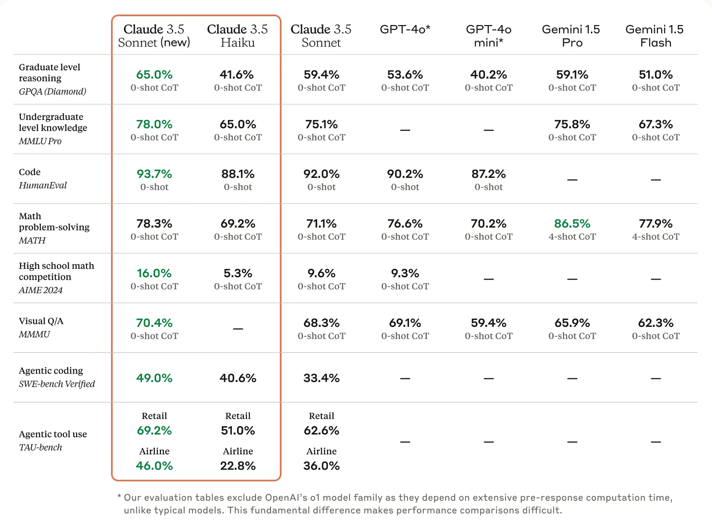

1 LLM Model
- 모델 혹은 LLM(Large Language Model) 단계는 이전 프롬프트 단계에서 구성된 입력을 기반으로 대규모 언어 모델을 활용하여 응답을 생성하는 과정
- RAG 시스템의 핵심적인 부분: 언어 모델의 능력을 최대한 활용하여 사용자의 질문에 대해 정확하고 자연스러운 답변을 생성
- LLM의 필요성
- 사용자 의도 이해: LLM은 다양한 언어의 구조와 의미를 깊이 이해하고 있으며, 이를 바탕으로 복잡한 질문에 답할 수 있다.
- 자연어 이해(NLU)와 자연어 생성(NLG) 능력이 결합되어, 보다 자연스럽고 유익한 응답을 제공
- 문맥적 적응성
- LLM은 주어진 문맥을 고려하여 응답을 생성
- 이는 사용자의 질문에 더욱 정확하게 대응
- 사전학습된 지식외 사용자가 제공한 정보에 기반한 답변을 문맥을 참고하여 답변
- LLM의 중요성
- LLM 단계는 사용자의 질문에 대한 답변의 질과 자연스러움을 결정짓는 핵심 요소
- 이 단계에서 LLM은 지금까지의 모든 데이터와 정보를 종합하여 사용자의 질문에 최적화된 답변을 생성
- LLM의 성능은 RAG 시스템의 전체적인 성능과 사용자 만족도에 직접적으로 영향
# 단계 7: 언어모델(LLM) 생성
# OpenAI 의 GPT-4o 모델 을 생성합니다.
llm = ChatOpenAI(model_name="gpt-4o")
# Anthropic 의 Claude 모델 을 생성합니다.
from langchain_anthropic import ChatAnthropic
llm = ChatAnthropic(model="claude-3-sonnet-20240229")
# LangChain이 지원하는 Ollama(로컬) 모델을 사용합니다.
from langchain_community.chat_models import ChatOllama
llm = ChatOllama(model="llama3:8b")2 다양한 LLM 모델 활용
# API KEY를 환경변수로 관리하기 위한 설정 파일
from dotenv import load_dotenv
# API KEY 정보로드
load_dotenv()
# LangSmith 추적을 설정합니다. https://smith.langchain.com
# !pip install langchain-teddynote
from langchain_teddynote import logging
from langchain_teddynote.messages import stream_response
# 프로젝트 이름을 입력합니다.
logging.langsmith("CH04-Models")2.1 OpenAI
2.1.1 개요
- OpenAI는 채팅 전용 Large Language Model (LLM)을 제공
- 이 모델을 생성할 때 다양한 옵션을 지정할 수 있으며, 이러한 옵션들은 모델의 동작 방식에 영향
2.1.2 옵션 상세 설명
temperature
- 샘플링 온도를 설정하는 옵션: 값은 0과 2 사이에서 선택, 높은 값(예: 0.8)은 출력을 더 무작위하게 만들고, 낮은 값(예: 0.2)은 출력을 더 집중되고 결정론적으로 만든다
max_tokens
- 채팅 완성에서 생성할 토큰의 최대 개수를 지정: 이 옵션은 모델이 한 번에 생성할 수 있는 텍스트의 길이를 제어
model_name
- 적용 가능한 모델을 선택하는 옵션: 더 자세한 정보는 OpenAI 모델 문서에서 확인
모델 스펙
- 링크: https://platform.openai.com/docs/models
| Model | Input (1M) | Cached Input (1M) | Output (1M) | Context Window | Max Output Tokens | Knowledge Cutoff |
|---|---|---|---|---|---|---|
| gpt-4.1 | $2.00 | $0.50 | $8.00 | 1,047,576 | 32,768 | Jun 01, 2024 |
| gpt-4.1-mini | $0.40 | $0.10 | $1.60 | 1,047,576 | 32,768 | Jun 01, 2024 |
| gpt-4.1-nano | $0.10 | $0.025 | $0.40 | 1,047,576 | 32,768 | Jun 01, 2024 |
| gpt-4o | $2.50 | $1.25 | $10.00 | 128,000 | 16,384 | Oct 01, 2023 |
| gpt-4o-mini | $0.15 | $0.075 | $0.60 | 128,000 | 16,384 | Oct 01, 2023 |
| o1 | $15.00 | $7.50 | $60.00 | 128,000 | 65,536 | Oct 01, 2023 |
| o1-mini | $1.10 | $0.55 | $4.40 | 128,000 | 65,536 | Oct 01, 2023 |
| o1-pro | $150.00 | – | $600.00 | 128,000 | 65,536 | Oct 01, 2023 |
| o3-mini | $1.10 | $0.55 | $4.40 | 200,000 | 100,000 | Oct 01, 2023 |
| gpt-4.5-preview | $75.00 | $37.50 | $150.00 | – | – | – |
from langchain_openai import ChatOpenAI
# ChatOpenAI 객체를 생성합니다.
gpt = ChatOpenAI(
temperature=0,
model_name="gpt-4.1-mini", # 모델명
)
# 스트리밍 출력을 위하여 invoke() 대신 stream()을 사용합니다.
answer = gpt.stream("사랑이 뭔가요?")
# 답변 출력
from langchain_teddynote.messages import stream_response
stream_response(answer)사랑은 매우 복잡하고 다양한 감정, 행동, 그리고 관계의 형태로 나타나는 개념입니다. 일반적으로 사랑은 깊은 애정과 관심, 그리고 타인에 대한 헌신을 포함합니다. 사랑은 여러 형태로 나타날 수 있으며, 그 중 몇 가지는 다음과 같습니다:
1. **로맨틱 사랑**: 두 사람 간의 깊은 정서적, 육체적 끌림을 포함하는 사랑입니다. 연인이나 배우자 사이에서 주로 나타납니다.
2. **가족 사랑**: 부모와 자식, 형제자매 등 가족 구성원 간의 사랑입니다. 이 사랑은 보호, 지원, 그리고 무조건적인 애정을 포함합니다.
3. **우정**: 친구들 간의 사랑으로, 상호 신뢰, 존중, 그리고 즐거움을 기반으로 합니다.
4. **자기 사랑**: 자신을 존중하고 돌보는 마음입니다. 이는 건강한 자아 존중감과 정신적, 신체적 웰빙을 유지하는 데 중요합니다.
5. **이타적 사랑**: 타인의 행복과 복지를 위해 헌신하는 사랑입니다. 이는 자선 활동이나 봉사와 같은 형태로 나타날 수 있습니다.
사랑은 사람마다 다르게 경험되고 표현될 수 있으며, 문화적, 사회적, 개인적 요인에 따라 그 의미가 달라질 수 있습니다.3 Anthropic
Anthropic은 인공지능(AI) 안전성과 연구에 중점을 둔 미국의 스타트업 기업입니다. 주요 정보는 다음과 같습니다:
- 설립 연도: 2021년
- 위치: 미국 샌프란시스코
- 창립자: OpenAI 출신 직원들 (Daniela Amodei와 Dario Amodei 등)
- 기업 형태: 공익기업(Public Benefit Corporation)으로 등록
3.1 Claude
Claude는 Anthropic의 대표적인 대규모 언어 모델(LLM) 제품군입니다.
- API 키 발급: https://console.anthropic.com/settings/keys
- 모델 리스트: https://docs.anthropic.com/en/docs/about-claude/models

| model_name | model | Anthropic API | AWS Bedrock | GCP Vertex AI |
|---|---|---|---|---|
| Claude 3.5 Opus | 연말 출시 예정 | 연말 출시 예정 | 연말 출시 예정 | 연말 출시 예정 |
| Claude 3.5 Sonnet | claude-3-5-sonnet-20241022 | claude-3-5-sonnet-20241022 | anthropic.claude-3-5-sonnet-20241022-v2:0 | claude-3-5-sonnet-v2@20241022 |
| Claude 3.5 Haiku | 연말 출시 예정 | 연말 출시 예정 | 연말 출시 예정 | 연말 출시 예정 |
| Claude 3 Opus | claude-3-opus-20240229 | claude-3-opus-20240229 | anthropic.claude-3-opus-20240229-v1:0 | claude-3-opus@20240229 |
| Claude 3 Sonnet | claude-3-sonnet-20240229 | claude-3-sonnet-20240229 | anthropic.claude-3-sonnet-20240229-v1:0 | claude-3-sonnet@20240229 |
| Claude 3 Haiku | claude-3-haiku-20240307 | claude-3-haiku-20240307 | anthropic.claude-3-haiku-20240307-v1:0 | claude-3-haiku@20240307 |
사랑은 매우 복잡하고 주관적인 감정입니다. 다음과 같은 측면들이 포함될 수 있습니다:
1. 정서적 측면
- 상대방을 향한 깊은 애정
- 행복감과 설렘
- 상대를 위한 희생과 배려
2. 행동적 측면
- 함께하고 싶은 욕구
- 상대방을 보호하고 돕고자 하는 마음
- 상대의 행복을 위한 노력
3. 생물학적 측면
- 호르몬의 변화
- 신체적 반응
4. 사회문화적 측면
- 문화와 시대에 따라 다른 표현방식
- 사회적 규범과의 관계
사랑은 개인마다 다르게 경험되고 표현되는 매우 개인적인 감정이며, 시간에 따라 변화하고 성장할 수 있는 것입니다.4 Perplexity
링크: https://www.perplexity.ai/
- 설립연도: 2022년
- 주요 투자자: Jeff Bezos, Nvidia, Databricks, Bessemer Venture Partners, IVP, Wayra 등
- 최근 펀딩: 5억 달러 (2024년 10월)
- 기업 가치: 약 90억 달러 (2024년 11월 기준)
- 월간 활성 사용자: 1,500만 명
4.1 Perplexity Pro 정확한 특징
- 일일 Pro 검색: 300회
- AI 모델 선택: GPT-4 Omni, Claude 3 Sonnet/Haiku, Sonar Large 32k[5]
- 파일 분석: PDF, CSV, 이미지 파일 지원
- 가격: 월 $20 또는 연 $200
4.2 Perplexity API 사용 방법
가격

- API 크레딧 획득
- Perplexity Pro 구독 시 매월 $5 상당의 API 크레딧 제공
- API 모델 옵션
- Llama 3 기반 모델
- Perplexity 온라인 LLM
- 인용 기능 포함
- API 키 발급: API 콘솔
API 키 발급 후 .env 파일에 키 저장
PPLX_API_KEY=이곳에 API 키를 입력하세요.혹은
import os
os.environ["PPLX_API_KEY"] = "이곳에 API 키를 입력하세요."참고
4.3 지원 모델
| Model | Parameter Count | Context Length | Model Type |
|---|---|---|---|
llama-3.1-sonar-small-128k-online |
8B | 127,072 | Chat Completion |
llama-3.1-sonar-large-128k-online |
70B | 127,072 | Chat Completion |
llama-3.1-sonar-huge-128k-online |
405B | 127,072 | Chat Completion |
4.4 ChatPerplexity 매개변수
model
사용할 언어 모델을 지정 (예: “llama-3.1-sonar-small-128k-online”) - 기본 성능과 능력을 결정.
temperature
응답의 무작위성을 조절 (0.0-1.0), 0은 결정적, 1은 가장 무작위한 응답 생성.
top_p
토큰 샘플링의 확률 임계값 설정 (0.0-1.0), 높을수록 더 다양한 출력 허용.
search_domain_filter
검색 결과를 지정된 도메인으로 제한, 리스트 형태로 제공 (예: [“perplexity.ai”]).
return_images
응답에 이미지 포함 여부를 결정하는 불리언 플래그.
return_related_questions
관련 질문 제안 기능을 활성화/비활성화하는 불리언 플래그.
top_k
사용할 검색 결과의 수 제한 (0은 제한 없음을 의미).
streaming
응답을 스트리밍으로 받을지 완성된 형태로 받을지 결정하는 불리언 플래그.
presence_penalty
토큰 반복에 대한 페널티 (-2.0에서 2.0), 높을수록 재사용을 억제.
frequency_penalty
일반적/희귀 토큰 선호도 조정 (-2.0에서 2.0), 높을수록 희귀 토큰 선호.
코드
from langchain_teddynote.models import ChatPerplexity
perplexity = ChatPerplexity(
model="llama-3.1-sonar-large-128k-online",
temperature=0.2,
top_p=0.9,
search_domain_filter=["perplexity.ai"],
return_images=False,
return_related_questions=True,
# search_recency_filter="month",
top_k=0,
streaming=False,
presence_penalty=0,
frequency_penalty=1,
)응답을 출력: ChatPerplexity 는 지식 정보의 출처를 citations 속성에 저장
2024년 노벨문학상은 한국의 소설가 한강이 수상했습니다.
한강은 그의 작품들이 “역사적 트라우마에 맞서고, 인간의 삶의 연약함을 드러낸 강렬한 시적이고 실험적인 문체”를 통해 현대 산문의 혁신을 보여준 점을 인정받았습니다. 그의 주요 작품들 중 『채식주의자』, 『소년이 온다』, 『작별하지 않는다』 등이 특별히 언급되었습니다[1][3][4].
한강은 아시아 여성 작가로서 최초로 노벨문학상을 수상한 것으로, 이는 한국 문학계와 아시아 문학계에 큰 의미를 가진 사건입니다. 또한, 그는 이전에 2016년 맨부커상과 2023년 메디치 외국문학상을 수상한 바 있습니다[1][4].
[1] https://times.postech.ac.kr/news/articleView.html?idxno=23342
[2] https://www.segye.com/newsView/20241115508113
[3] https://www.hani.co.kr/arti/science/science_general/1165375.html
[4] https://www.umnews.org/ko/news/about-han-kangs-nobel-prize-in-literature
[5] https://news.kbs.co.kr/news/pc/view/view.do?ncd=8097555스트리밍 출력
2024년 노벨문학상은 한국의 소설가 한강이 수상했습니다.
한강은 그의 작품들이 “역사적 트라우마에 맞서고, 인간의 삶의 연약함을 드러낸 강렬한 시적이고 실험적인 문체”를 통해 현대 산문의 혁신을 보여준 점을 인정받았습니다. 스웨덴 한림원은 그의 작품들, 특히 『채식주의자』, 『소년이 온다』, 『작별하지 않는다』 등을 높이 평가했습니다. 한강은 아시아 여성 작가로서는 최초로, 한국인으로서는 최초로 노벨문학상을 수상한 작가입니다[1][3][4].
[1] https://times.postech.ac.kr/news/articleView.html?idxno=23342
[2] https://www.segye.com/newsView/20241115508113
[3] https://www.hani.co.kr/arti/science/science_general/1165375.html
[4] https://www.umnews.org/ko/news/about-han-kangs-nobel-prize-in-literature
[5] https://news.kbs.co.kr/news/pc/view/view.do?ncd=80975554.5 Together AI
- 링크: https://www.together.ai/
- API 키 발급: https://api.together.ai/
TOGETHER_API_KEY환경변수 설정
Together AI는 2022년 샌프란시스코에서 설립된 생성형 AI 클라우드 플랫폼 회사입니다(NVIDIA, Kleiner Perkins, Lux, NEA 등으로부터 1억 2천만 달러 이상의 투자를 유치했습니다).
4.5.1 주요 제품과 특징
Together Inference
- 업계에서 가장 빠른 추론 스택을 제공하며, vLLM보다 최대 4배 빠른 성능을 보입니다
- Llama-3 70B 사용 시 GPT-4 대비 11배 낮은 비용으로 운영 가능
- 자동 확장 기능으로 API 요청 볼륨에 맞춰 용량이 자동으로 조정됩니다
Together Custom Models
- 사용자 맞춤형 AI 모델 학습 및 Fine-tuning 지원
- FlashAttention-3와 같은 최신 최적화 기술 적용
- 학습된 모델에 대한 완전한 소유권 보장
4.5.2 기술적 특징
성능 최적화
- FlashAttention-3 커널과 독점 커널을 통합한 추론 엔진 보유
- Medusa와 SpecExec 같은 추측적 디코딩 알고리즘 적용
- 최고의 정확도와 성능을 위한 독자적인 양자화 기술 사용
지원 모델
- Google Gemma, Meta의 Llama 3.3, Qwen2.5, Mistral AI의 Mistral/Mixtral 등 200개 이상의 오픈소스 모델 지원
- 멀티모달 AI 모델 지원으로 다양한 형태의 데이터 처리 가능
보안 및 프라이버시
- 사용자가 명시적으로 동의하지 않는 한 데이터는 새로운 모델 학습에 사용되지 않음
- 데이터 보관에 대한 완전한 제어권을 사용자에게 제공
코드
from langchain_teddynote.messages import stream_response
from langchain_together import ChatTogether
together = ChatTogether(model="meta-llama/Llama-3.3-70B-Instruct-Turbo", temperature=0)
# together = ChatTogether(model="google/gemma-2-27b-it", temperature=0)
answer = together.stream("로또 생성기 파이썬 코드를 작성하세요")
stream_response(answer)function calling 지원
5 Cohere
Cohere는 기업용 인공지능 솔루션을 제공하는 선도적인 AI 기업으로, 대규모 언어 모델(LLM)을 개발하여 기업들이 AI 기술을 쉽게 도입하고 활용할 수 있도록 돕고 있습니다.
5.1 Cohere 개요
- 설립연도: 2020년
- 주요 투자자: Inovia Capital, NVIDIA, Oracle, Salesforce Ventures
- 시리즈 C 펀딩: 2억 7000만 달러 유치
- 기업 미션: 기업용 AI 플랫폼 제공
5.2 주요 제품
5.2.1 Command R+
Command R+는 기업용으로 최적화된 Cohere의 최신 LLM입니다.
5.2.1.1 주요 특징
- 긴 컨텍스트 윈도우: 128k 토큰 지원
- 고급 RAG 기능: 검색 강화 생성 기능 제공
- 다국어 지원: 10개 주요 비즈니스 언어 지원
- 자동화 도구 사용 기능: 복잡한 비즈니스 프로세스 자동화
5.2.2 Aya
Aya는 Cohere의 비영리 연구소인 Cohere for AI에서 개발한 오픈소스 다국어 LLM입니다.
5.2.2.1 주요 특징
- 언어 지원: 101개 언어 지원 (기존 오픈소스 모델의 두 배 이상)
- 훈련 데이터셋: 5억 1300만 개의 데이터 포인트 포함하는 대규모 다국어 훈련 데이터셋 공개
6 Upstage
Upstage는 인공지능(AI) 기술, 특히 대규모 언어 모델(LLM)과 문서 AI 분야에 특화된 국내 스타트업입니다.
6.1 주요 제품 및 기술
6.1.1 Solar LLM
- 주요 특징: Upstage의 주력 대규모 언어 모델로, 빠른 성능과 비용 효율성으로 주목받고 있습니다.
- 기술적 접근: Depth-Up Scaling (DUS) 기술을 적용하여 성능을 극대화합니다.
- 플랫폼 통합: Amazon SageMaker JumpStart 등 다양한 플랫폼을 통해 API로 통합 제공됩니다.
6.1.2 Document AI Pack
- 기능: OCR 기술을 기반으로 한 문서 처리 솔루션으로, 복잡한 문서에서 필요한 내용을 정확히 추출하고 디지털화합니다.
6.1.3 AskUp Seargest
- 특징: 개인화된 검색 및 추천 서비스를 제공하며, 기존의 ChatGPT 통합 무료 챗봇 AskUp의 업그레이드 버전입니다.
6.2 API 키 발급
API 키 발급은 여기에서 가능합니다.
코드
# UPSTAGE API KEY 설정
# import os
# os.environ["UPSTAGE_API_KEY"] = "이곳에 API KEY를 입력하세요."
from langchain_upstage import ChatUpstage
# ChatUpstage 객체를 생성합니다.
upstage = ChatUpstage(model="solar-pro")
# 스트리밍 출력을 위하여 invoke() 대신 stream()을 사용합니다.
answer = upstage.stream("사랑이 뭔가요?")
# 답변 출력
stream_response(answer)6.3 Xionic
사이오닉에이아이(Sionic AI)는 대한민국의 유망한 인공지능 스타트업으로, 기업용 생성형 AI 솔루션을 개발하고 있습니다. 다음은 이 회사에 대한 주요 정보입니다:
6.3.1 주요 제품
- STORM Platform: 기업이 생성형 AI를 기술적 고민 없이 바로 적용할 수 있도록 하는 플랫폼
- STORM Answer: 기업에 최적화된 생성형 AI 솔루션으로 비즈니스 생산성 향상을 목표로 함
- Xionic: 상업적 이용이 가능한 라이센스의 한국어 AI 모델
상업적 이용이 가능한 라이센스의 한국어 모델
- 링크: https://github.com/sionic-ai/xionic
(참고) 2024.11.29 기준 사용불가 (API 서버 오류)
코드
from langchain_openai import ChatOpenAI
from langchain_teddynote.messages import stream_response
# 2024. 11. 21 업데이트 코드
xionic = ChatOpenAI(
model_name="xionic-1-72b-20240919",
base_url="https://sionic.chat/v1/",
api_key="934c4bbc-c384-4bea-af82-1450d7f8128d",
)
# 스트리밍 출력을 위하여 invoke() 대신 stream()을 사용합니다.
answer = xionic.stream("사랑이 뭔가요?")
# 답변 출력
stream_response(answer)7 LogicKor
LogicKor는 한국어 언어 모델의 다분야 사고력을 평가하기 위해 만들어진 벤치마크 리더보드입니다.
7.1 목적
한국어 언어 모델의 다양한 분야에서의 사고력을 측정하는 벤치마크
7.2 평가 영역
- 한국어 추론
- 수학
- 글쓰기
- 코딩
- 이해력
7.3 주요 특징
- 다양한 모델 평가: 국내외 다양한 언어 모델들의 성능을 비교할 수 있음
- 객관적 성능 측정: 모델의 실제 성능을 다각도로 평가하여 객관적인 지표 제공
- 오픈 소스: 누구나 접근하고 결과를 확인할 수 있는 오픈 플랫폼
LogicKor 리더보드는 한국어 AI 모델의 발전을 위한 중요한 도구로 자리잡고 있으며, 지속적인 개선과 발전이 기대되고 있습니다.
- 링크: LogicKor 리더보드